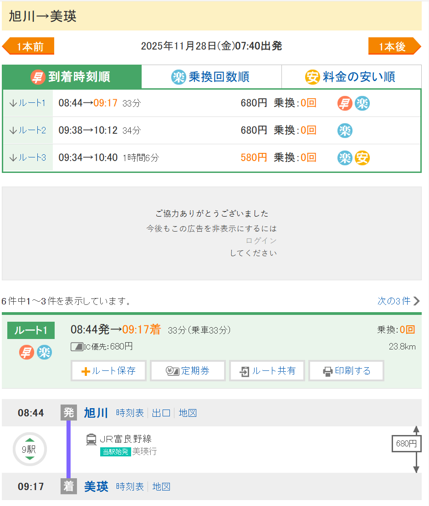
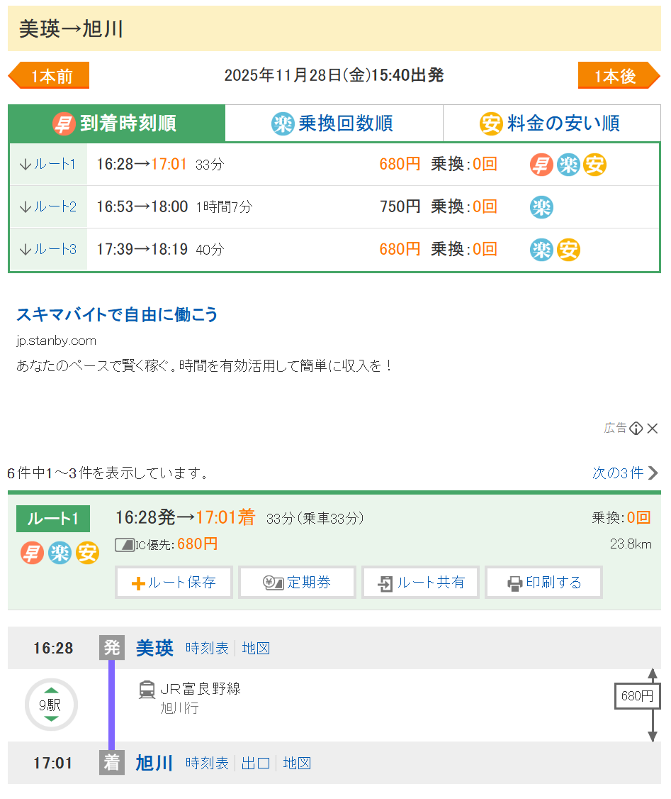

旅行概览
9天8晚
11月21日 - 11月29日
4个城市
函馆、登别、札幌、旭川
JR交通
利用JR Pass畅游
景点巡礼
函馆山夜景、小樽运河等
11.21 住函馆
上午
jsj：0830-1300 到新千岁机场
下午
新千岁-函馆 1350-1713

新千岁-函馆

特急北斗南千岁函馆
11.22 住函馆
行程安排
- 第一天步行金森仓库，八幡坂，函馆山夜景
- 第二天上午去五棱郭公园，下午去大沼公园P17，可以从JR函馆站坐JR20分钟达到

时刻表
看小红书去年11.18是秋末冬初的景色，感觉可以落地直接函馆赌一下红叶（五棱郭公园），概率也很小就是了
主要景点

五棱郭公园

大沼国定公园

修道院
柯南巡礼路线
-
📍JR函馆站（P2）
🗺️所有行程的开始，札幌->函馆JR特级北斗号的终点站。
-
📍普乐美雅凯酒店（P3-P4）
🗺️在JR函馆站隔壁，步行160米，是柯南动漫里的，酒店很不错。有人问这家与函馆JR旅馆之间怎么选，两家酒店都很好，早餐也非常好，普乐美在顶楼有静吧，暁调的很好P13；JR旅馆有温泉，晚上泡汤很合适。
-
📍五稜郭公园（P5-P8）
🗺️从函馆JR站公交站台出发，坐5A和5B，时刻表P18，一站就到。五稜郭塔可以拍到星状的公园，最美是樱花盛开的时候。P15可以看四季的五稜郭。
-
📍金森仓库&小丑汉堡（P9-P10）
🗺️从酒店导航步行1.5公里左右就可以到达，红砖仓库对面就有函馆限定小丑汉堡。
-
📍八幡坂（P11）
🗺️连接函馆红砖仓库和函馆山的一条上坡路，P14是四季的八幡坂。
-
📍函馆山百万夜景（P1）
🗺️走到八幡坂最上面，延东南方向小路一直走，路过很多教会后抵达函馆山缆车，乘缆车上山看夜景。注意：缆车今年10月9日至11月9日停运，只能乘坐巴士和出租车上山。11月9日之后登山道关闭，只能缆车上山。
11.23 住登别
交通
函馆-登别 1501-1734


11.24 住登别
登别一日游

景点罗列

具体行程和交通参考
11.25 住札幌
交通
登别-札幌 1705-1823

札幌函馆时刻表

登别札幌

晚班
11.26 住札幌
小樽一日游 - 交通

小樽时刻表

早班

晚班
- 去程：札幌站➠南小樽站
- 返程：小樽站➠札幌站
- 车程40分钟，30分一班次，想看海景记得选右侧靠窗位置💺
- 中途有经过钱函/朝里，但一定要坐普通列车
- JRPASS可用
市内交通
- 小樽很小，景点都可以步行到达
- 只有去天狗山要坐大巴🚌。在小樽站🚇前乘坐大巴，可用ic卡，也可以现场买
天狗山大巴
一日游路线
南小樽站➠八音盒博物馆&蒸汽钟（0.5小时）➠小樽商业街-童话十字路口&北一哨子馆&大正哨子馆（2.5小时）➠小樽运河（0.5小时）➠三角市场（1小时）➠ 船见坂（0.5小时）➠天狗山（3.5小时）➠小樽站
核心景点
八音盒博物馆
- 有来自世界3000多种音乐盒，很好逛，很浪漫
- 从南小樽站出来就可以直接导航来这里，很近
蒸汽钟
- 就在八音盒前，每15分钟会喷发蒸汽，很有仪式感的响声
小樽商业街
- 一路都是各打卡点和特色商店
- LeTAO就在街上，在蒸汽钟附近。可以⬆️三楼，风景超好，360度看小樽街景❗️
童话十字路口
- 周围欧式建筑，伴着音乐盒的声响氛围很好
小樽运河
- 路线：小樽艺术村→小樽运河→小樽运河博物馆→旧日本邮船小樽分店
- 电影《情书》的取景地，小樽乃至北海道标志性景点
- 必打卡的地标景观，河岸边是怀旧的仓库
船见坂
- 《情书》电影打卡点，三角市场边上的一条斜坡
- 一条通往大海的路🌊，超好拍
天狗山
- 小樽站前乘坐大巴，4号月台搭乘9号巴士，30分钟一班，车程25分钟
- 天狗山索道约5分钟
11.27 住旭川
交通
札幌-旭川 1400-1525
札幌旭川
午班
行程安排
札幌上午：
中岛公园（2小时）➠ 薄野&狸小路商店街（2小时）+中餐➠札幌电视塔&大通公园（0.5小时）➠时计台（0.5小时） ➠旧本厅舍（0.5小时）➠啤酒博物馆（1小时）➠白色恋人公园（1.5小时）➠回薄野晚餐
需地铁🚊+步行🚶
旭川下午：
旭岳大雪山？得早上去，不太行
旭山动物园好像评价不咋样
逛逛市区/晚点再到旭川
11.28 住旭川
行程安排
旭川-美瑛-旭川
去程
回程
11.29 返程
返程交通
旭川-新千岁机场 0944-1206
旭川机场
雪场备选方案
如果去隐士/突然提前开板，就把11.27及以后的改成雪场
从札幌市区前往二世谷（Sapporo=Niseko）
新千岁机场预约巴士里也有 预定方法类似大家可参考
从札幌市区前往二世谷交通分为BUS、JR两种
🚌Bus
优势：基本直达雪场 大件行李友好 整体用时更短
劣势：发车时间固定 2个巴士需提前预约 另1个非预约巴士人多可能会站一截
🚄JR
优势：时间较巴士更灵活
劣势：需换乘多趟 下JR后仍需转乘当地BUS前往雪场 整体耗时更长
需预约巴士 可直达雪场
1.CHOU BUS 北海道中央巴士
- 链接见评论置顶
- 进入官网后可选中文 支付链接请看自己邮箱内的回执
- 成人单程5000JPY 往返8500JPY。站点很多直达各雪场（P2 3）这个巴士要求至少提前两天预约 而且经常约满 一定要提前约
2.HOKKAIDO RESORT LINER 北海道度假线
- 链接见评论置顶
- 进官网后选only bus plan
- 成人5500JPY 多站点 终点站是hirafu游客中心（出发去二世谷任意雪场都有BUS）请见（P456） 付款方式接受信用卡及便利店机器上付款
非预约巴士
1.北海道中央巴士
每日三班 8:35 10:35 13:35 （P7）
始发站：札幌站前（P8）
目的地：俱知安
由于本巴士经停小樽 所以车上人数可能较多 建议从札幌駅前上车 确保有座位不用站 具体站点link请用Google maps打开获取
📌非常重要
本车非直达雪场 可以理解为到山下的镇上 所以需在‼️俱知安下车‼️换乘当地BUS上山 当地巴士无法用IC卡（西瓜卡等）只接受现金或信用卡支付
🫶🏽link来自网友Aaron 侵删